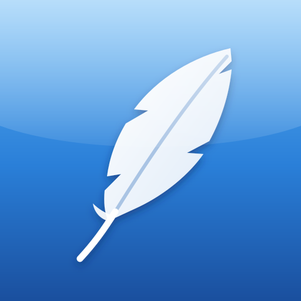

Feather
The original PC Angry Birds games, in your browser.
Feather plays the PC versions of the games: their own levels, physics and sound, on a computer, phone or tablet.
This site holds no game files. You bring the game's original installer and your browser unpacks it on this device.
Nothing is uploaded, and once a game is here it plays offline.
1. Tap the game in the dock, then Get: your browser downloads the installer from archive.org.
2. Tap Choose File and pick the installer. It unpacks in a few seconds to a minute.
3. Tap Play.
Add Feather to your Home Screen and play from there: Share → Add to Home Screen (on iOS 26, tap ⋯ first). It runs full
screen, and Safari keeps its games.
The Home Screen app has its own storage, so get your games from inside it.
Saves stay on this device. Options → Export Saves keeps a copy; Import Saves brings it back, here or on another device.
Removing a game keeps its saves. Clearing this site's data in the browser removes both.